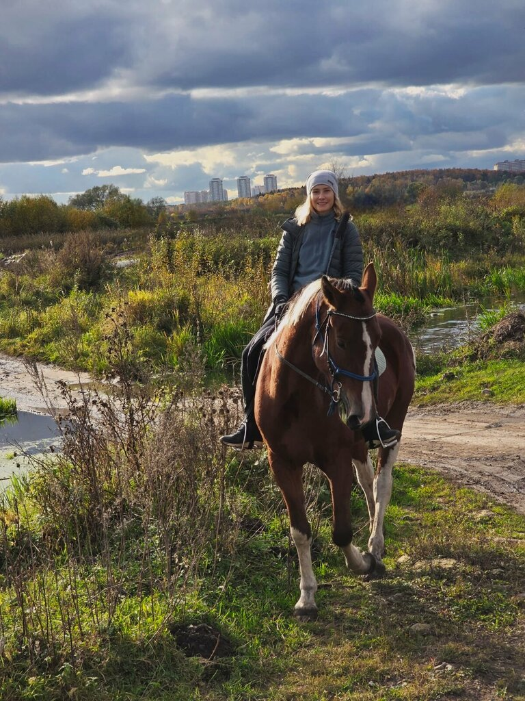
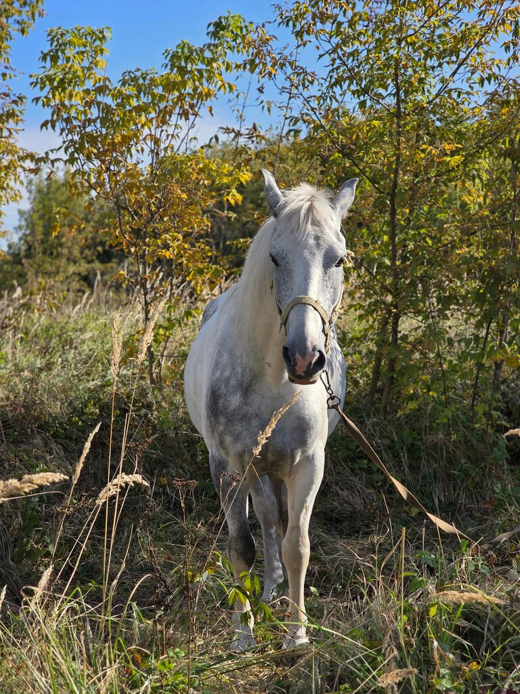
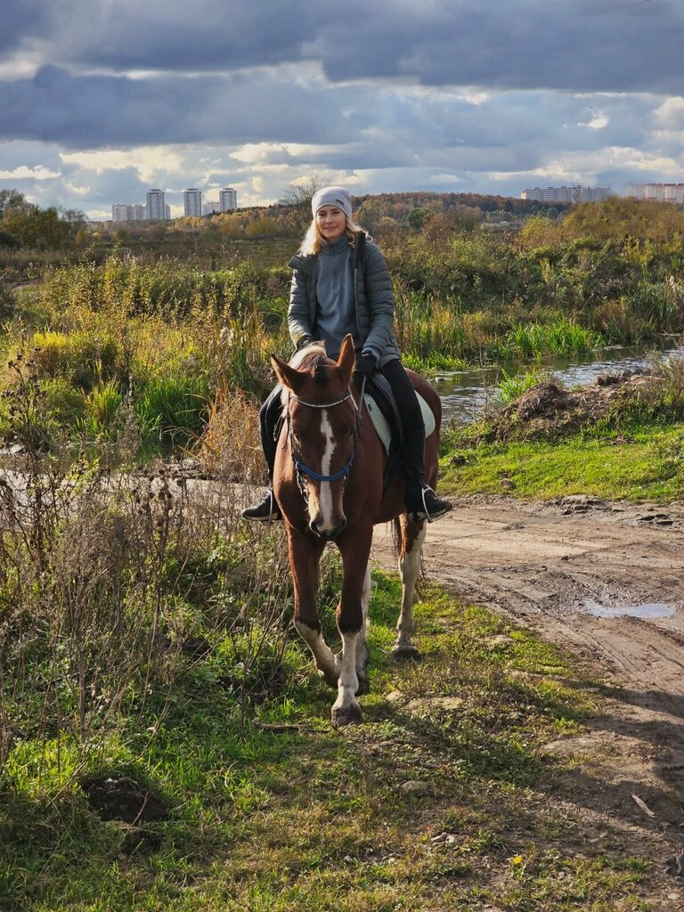

Свой темп
Прогулка или тренировка: шаг, рысь и галоп — под ваш опыт и уровень.
Природа, движение и внимание опытного инструктора. Начните с прогулки шагом, попробуйте рысь и галоп или приходите на регулярные тренировки по верховой езде.


Отдых для всех и каждогоGalant — конный клуб в Раменском районе, где проходят конные прогулки по живописным маршрутам Подмосковья и тренировки по верховой езде. Можно начать с первого знакомства, спокойно освоить верховую езду или выбрать быстрый темп для опытного всадника.
Лес, поле и места для открытого отдыха в стороне от городской суеты.
Инструктор объясняет правила общения с лошадью и помогает освоиться в седле.
Прогулки и тренировки для взрослых и детей, катание на пони и знакомство с осликом.
Формат подходит взрослым и детям. Инструктор подберёт лошадь и маршрут под ваш опыт, темп и настроение.
Прогулка или тренировка: шаг, рысь и галоп — под ваш опыт и уровень.
Прогулки по лесу и полям для отдыха, движения и новых впечатлений.
Инструктаж, спокойные лошади и внимательный инструктор на маршруте.
Создаём кадры с одной или двумя лошадьми во время прогулки.

Шаг и первая рысь, знакомство с лошадью
Рысь, галоп и длинные маршруты
Индивидуальные занятия на плацу и абонементы
Лошадь для фото и видеосопровождение
Катание на пони и знакомство с осликом
Подскажем программу по вашему опыту, цели и желаемому темпу.
Просто, безопасно и в комфортном для вас темпе.
Подбираем маршрут, продолжительность и темп под ваш опыт.
Знакомимся с лошадью и правилами безопасного взаимодействия.
Наслаждаемся природой и дорогой вместе с инструктором.
Клуб находится в деревне Верея Раменского муниципального округа. Точные входные координаты и маршрут доступны на карте.
Расскажите, есть ли у вас опыт, и мы поможем выбрать подходящий формат — прогулку или тренировку.
«В 2022 году я приехала в «Галант» просто на конную прогулку. Тогда я даже не думала, что это место настолько изменит мою жизнь. … Со временем я начала покупать абонементы, учиться верховой езде и проводить в клубе всё больше времени.»Читать полный отзыв
«Сегодня были на конной прогулке шаг-рысь. Молодой человек первый раз взаимодействовал с лошадями и уже спустя минут 15 уверено сидел в седле, благодаря инструктору Юлии, которая провела инструктаж и в процессе прогулки рассказывала особенности поведения и характера лошадей. … Спасибо, за приятную прогулку и гору эмоций!»Читать полный отзыв
«Прогулка отличается от классических походов за поводок, здесь мне дали попробовать себя как всадника, что очень меня впечатлило… Фотоссессия прошла отлично, правда конь позировал лучше меня.»Читать полный отзыв
«Пришла в клуб совсем без опыта — и не пожалела. Тренеры не торопят, объясняют каждую мелочь: как подойти к лошади, как сесть, как правильно держать руки и корпус. … Чувствую, что прогресс есть, и главное — нет страха.»Читать полный отзыв
«Была на конной прогулке, все очень понравилось. Место красивое, рядом река, тихо и спокойно. Лошади ухоженные, добрые, сразу видно, что за ними хорошо следят и ухаживают. … Инструкторам отдельное спасибо, всё объяснят и покажут, даже если ты новичок и боишься.»Читать полный отзыв
«Вообще мы с семьей были на разных конюшнях и фермах, но тут, мы были приятно удивлены, во первых рай для маленького ребенка, во вторых лошади, боже, они очень красивые, в третьих инструктор, очень улыбчивая девушка по имени Виктория, отдельное вам спасибо! … Прям вот 5 звезд, сколько приедем еще!»Читать полный отзыв
«Сходили с молодым человеком на совмещённую прогулку. Сразу отмечу большой плюс: нам пошли навстречу и объединили разный уровень подготовки в одну поездку. Лошади хорошие, при переходе на рысь и галоп слушались отлично. При этом впечатления остались смешанными, поэтому хочу подсветить моменты для роста. … Шлемы нам не предложили, базового инструктажа перед выездом не было. … Надеюсь, конюшня учтёт эти моменты и сможет улучшить организацию.»Читать полный отзыв
«Недавно посетили конюшню, приезжали на прогулку. Очень понравилось! Спасибо Юле за прогулку и интересную информацию! … Обязательно к вам приедем еще в скором времени!»Читать полный отзыв
«Прекрасная конюшня. Давно занимаюсь именно здесь. Добрые и послушные лошадки, всегда чисты и причесаны. Инструктора вежливые и опытные, всему научат. …»Читать полный отзыв
«В Galant пришла совершенно случайно — первый раз была на прогулке примерно полгода назад. Тогда даже не думала, что это перерастёт в регулярные тренировки. Но настолько понравилось, что решила попробовать заниматься, и сейчас приезжаю несколько раз в неделю. …»Читать полный отзыв
Отзывы опубликованы из открытых карточек Galant на Яндекс Картах.